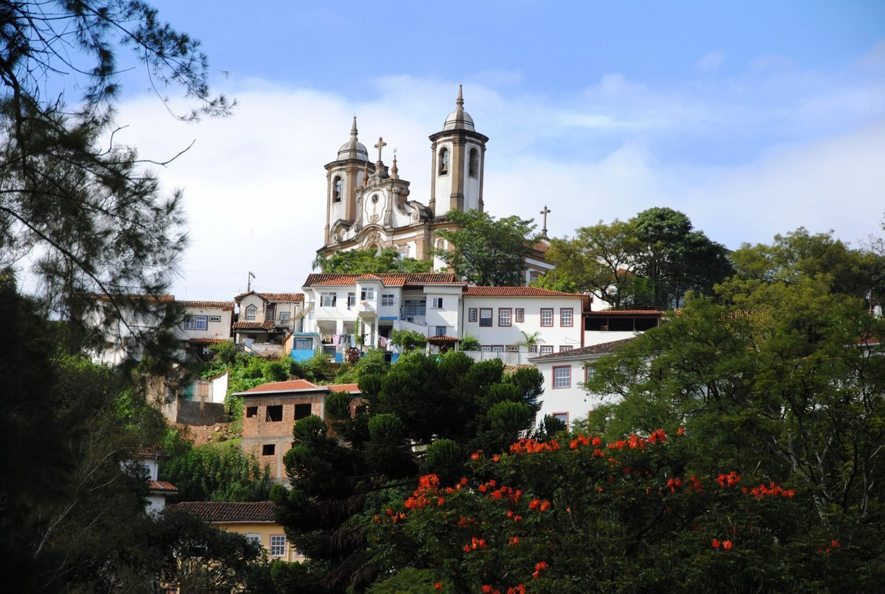
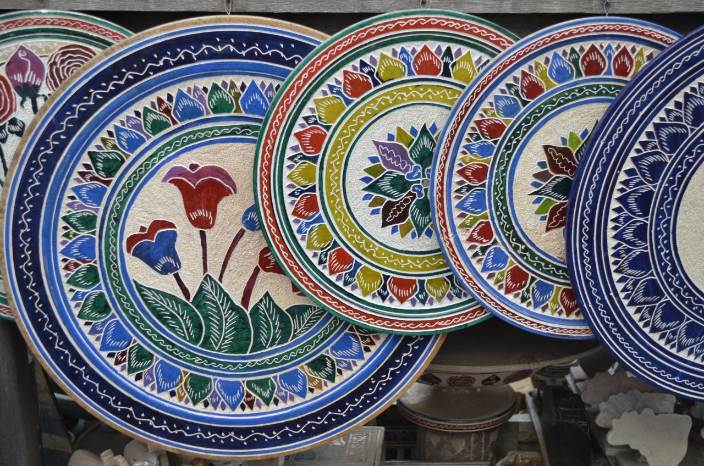

Ouro Preto Brazil is the heart of Brazil, Revolution, and an economic explosion
Ouro Preto is a small colonial town in the heart of the Brazilian state of Minas Gerais, near to Belo Horizonte. The entire town was Brazil’s first place to be designated a UNESCO world heritage site, due to its vast historical significance from the early days of Portuguese colonization of Brazil and for its high quality of architectural preservation.
Similar to the “go west young man” slogans in America which were inspired by the California Gold Rush, colonial settlers were jumping over each other to get to Ouro Preto first to unearth the rich gold and mineral resource found there. ‘Ouro Preto’ means ‘black gold,’ and it is this gold which spurred an explosion of colonial exploration away from Brazil’s magnificent coastline.
In a nutshell
Highlights - Gorgeous scenery and well-preserved colonial architecture. Easily walkable. Lots of nearby waterfalls, trails, and nature activities suitable for all skill levels.
Lowlights - Though walkable, the cobblestone streets and numerous hills would make exploration a challenge for anyone with mobility impairments.
Bottom line - Ouro Preto is as steeped with as much charm and beauty as it is with historical significance. As one of the best preserved colonial cities in all of Brazil, it should be at the top of your list to visit when looking for a way out of the big cities.
A brief history of Ouro Preto
Founded in 1698 in conjunction with the discovery of gold, Ouro Preto’s population exploded to over 100,000 people almost overnight. At one time, it was the largest city in all of the America’s and even dwarfed the then-populations of Rio de Janeiro and New York City.
The wealth, power, and size of the city gave way to the first attempt of Brazilian independence from the Portuguese, but this effort proved futile when the Portuguese military crushed the uprising and made a public display of the revolution leader’s head in the town square to discourage any such future revolutionary efforts.
However, the ambitions of independence were not washed away so quickly and just 40 years later Brazil won its independence in 1822. The new Brazilian emperor named Ouro Preto as the Imperial City and established many South American firsts here, including the first pharmacy school on the continent.
And then the gold ran out
Ouro Preto flourished and led trends across the Americas, but then the gold supply started to dwindle and quickly came to a halt by the end of the 19th century. With the loss of gold resources, Ouro Preto lost its economic engine. Jobs vanished, growth halted, and soon the city became less relevant. The capital of the state of Minas Gerais was then moved to neighboring Belo Horizonte and the title of Imperial City was lost from Ouro Preto forever.
The city was forgotten nearly as quickly as it was established. The halt of construction and city expansion did, however, mean that original buildings were left standing and preserved. This is a primary reason for why the city still feels today like it did two centuries ago.
In the mid-20th century, the Brazilian government began massive restoration efforts throughout Ouro Preto to encourage the then-blossoming tourism industry there. Today, Ouro Preto is one of the most visited destinations in all of Brazil.
Further Reading: Belo Horizonte is a Historic and Cultural Capital of Brazil
What to see and do in Ouro Preto
Today Ouro Preto is a smaller town with all the small town charm you could ever dream up. But don’t let the small size fool you! There is plenty to do here, and I argue that it might even have the highest density of attractions in all of Brazil. Here is just a brief outline of my observations.
Museums
Many of the colonial government buildings and early manors have been converted into a variety of museums. The Casa dos Contos might have a boring name (tax collection house), but I encourage you not to judge this book by its cover. It has served as a home, a jail, and a hub for revolutionary planning. Its walls are now home to many documents and artifacts from Brazil’s earliest days.
If tales of the revolution have your attention, then be sure to check out the Museu da Inconfidência as well. Here you will learn the full story of Brazil’s revolutionary history. If you have studied the American Revolution, you will see many parallels in this history, as it was the American Revolution against the British which most inspired the Ouro Preto revolutionaries to rise up.
Considering what made Ouro Preto possible in the first place, you can’t come to know the town without making a visit to the Museu de Mineralogia. This mineral museum is more than just rocks and precious gems. Here you will continue to learn what shaped the hearts and minds of the early Brazilian settlers, and how that made Brazil the beautiful land we have come to know today.
There are also a number of art museums: Casa Guignard, Museu de Arte Sacra, Museu Aleijadinho, **and a very interesting church alter museum: Museu do Oratório. **
Everywhere you look in Ouro Preto you will find beauty. I encourage you to stroll down every alley, walk through every door, and keep an open mind and an open heart to what treasures you might find around the next corner.

Churches
Ouro Preto is famous for its churches. Not just for their architectural marvel, but also for their quantity of statues made by Aleijadinho, one of Brazil’s most famous sculptures. Churches are free and open to the public, but please consider a donation wherever you enter, as every drop of coin will go a long way to ensuring the preservation of these beautiful buildings for generations to come.
The Igreja da Nossa Senhora do Carmo is located in the main town square next to many museums and historical sites. If you are visiting Ouro Preto, you will have every reason to be directly next to this church and therefore no excuse not to go inside. This rococo-style church was built in 1766 and is home to the last pieces of art made by Aleijadinho.
With its unique shape, the Igreja de Nossa Senhora do Rosário was built with slave labor and was the only church in Ouro Preto where slaves were permitted to worship.
From its outside appearance, you might think that the Basílica Nossa Senhora do Pilar won’t offer anything which you can’t see at other churches in Ouro Preto, but you would be mistaken! The inside is gilded in gold and silver and is simply breathtaking in every way. The basement of the church houses the Museum of Sacred Art, which does have a small admission fee.
Mines
It is easy to think of mines as places worth not exploring when there is so much beauty and activity on the surface of the hills. But don’t forget that it is the mines which make Ouro Preto what it is. These were once the most important mines in the entire world and a visit to one or two of them is the best way to come to understand Ouro Preto.
At the top of your list to visit should be the Mina da Passagem. This is the largest mine in the world which offers tours. It is so large that there is even an underground lake, 120 meters below the surface! Be sure to bring a camera, as this is one of the most photogenic places in all of South America. The history here is also quite interesting, as the Portuguese gave the United Kingdom a 100-year lease to this mine in order to pay off imperial debts.
Mina do Chico Rei is another of the largest gold mines in the world and is the other most visited mine in Ouro Preto. The mine is named after Chico Rei, or “King Chico,” who was brought to Ouro Preto as a slave from Africa. It is said that King Chico smuggled enough gold out of the mine in his hair to one day not only buy his own freedom but to buy the entire mine!
Walking
Ouro Preto is a very walkable town. You will not find yourself getting mowed down by cars on most streets, but do watch out for bikes and motorbikes. The narrow streets and narrow sidewalks don’t offer a lot of room for you and all the other visitors, so just be polite and watch out for each other.
Wear sturdy shoes and take breaks as you need them. The old cobblestone streets and walking paths are beautiful but do take a toll on your feet and knees after an active day of walking. There are many hills to walk up and down, so exploring Ouro Preto can be a bit exhausting. There are plenty of places to sit for a coffee or a snack, so take advantage of the local fare whenever you need to take a break.
Shopping
Throughout all my travels in Brazil, I found that the handicrafts available in Ouro Preto were of the highest quality, lowest price, and felt the most authentic. There are still many shops with gold and minerals for sale. The prices of these minerals are good, but you should be familiar with precious stones to ensure everything is authentic.
Probably the most beautiful pieces are the local handicrafts made of stone. The Soapstone market is down the hill to the east from the Praca Tiradentes. This open-air market is full of local artisans selling beautiful handcrafted soapstone and wood art pieces. I bought an amazing stone chess set here, but had to leave it behind in Brazil as it did not fit in my luggage! I am very sad for that, but I was able to turn it into a great gift for my hosts in Campinas, which made my whole 6-month Brazilian excursion possible. And I can’t feel too bad about that!

In the near from Ouro Preto
I made a day trip excursion to the nearby Itacolomi State Park. You will find beautiful flora and fauna here which is easily enjoyable via the vast network of hiking trails. My favorite place in the Itacolomi State Park is a high waterfall with swimming lagoon below.
The more adventurous can climb to the top of the falls and jump into the lagoon below. I saw many people do this safely, but I could not muster up the courage myself. Instead, I enjoyed the company of fellow swimmers and encouraged the ones braver than me to provide a good show with their jump. Regardless of your desire to jump, swim, or just relax on the shores, this swimming hole offers a way for everyone to have a good time and to relax.
That’s a wrap
Ouro Preto was a major highlight in all of Brazil. I strongly encourage you to check it out if ever you have the opportunity.
Have you been there before? Are you planning a trip? I would love to hear from you in the comments below about your Ouro Preto experience or plans! You can also connect with me directly at @JudsonLMoore. Travel safely!